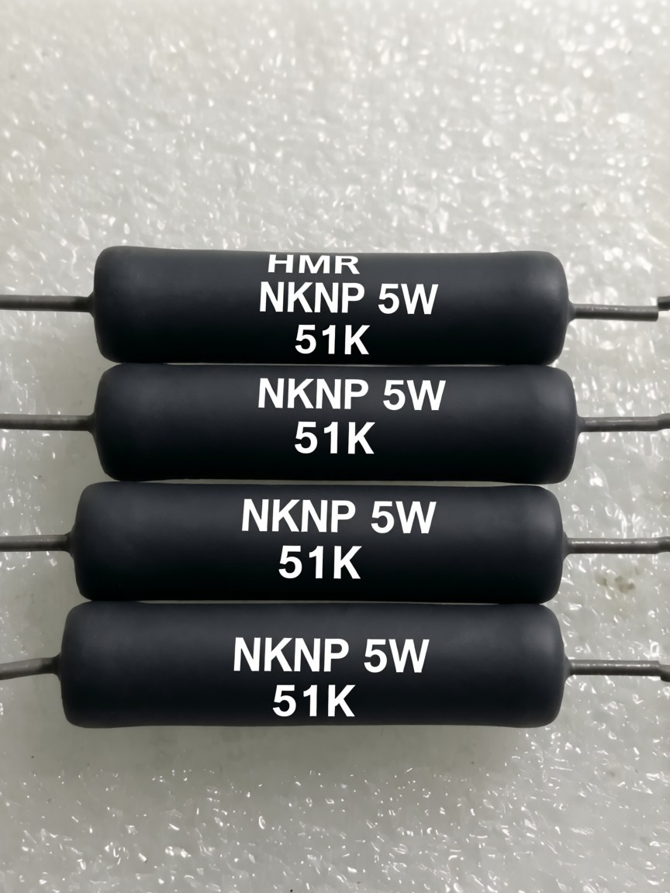

高功率 · 高耐压 · 耐脉冲 | CQC/UL 双认证 | 变频器制动与高压泄放首选

HVW 系列覆盖从精密仪器到工业设备的高阻值、高功率应用需求，绕线工艺带来低温度系数与优异的耐脉冲能力，是变频器制动、新能源高压系统泄放电路的核心元件。
| 参数项 | 规格 |
|---|---|
| 阻值范围 | 0.1Ω ~ 651kΩ（含高精度 1000 级） |
| 功率等级 | 1W ~ 50W（可选 100W 定制） |
| 耐压能力 | 10kV+（可选 20kV/30kV 定制） |
| 脉冲耐受 | 5kJ+（可耐 10kJ 定制） |
| 寄生电感 | 1 ~ 5μH（可选无感绕法） |
| 温度系数 (TCR) | < ±100 ppm/℃ |
| 阻值精度 | ±1% / ±2% / ±5% / ±10% |
| 工作温度 | -55°C ~ +350°C |
| 封装形式 | 轴向引线 / 径向引线 / SMD 贴片 |
| 材质 | 高阻合金丝（镍铬系），陶瓷基体 |
按"功率 × 阻值段"快速定位，实际订货请提供具体阻值/精度/封装/耐压要求。
| 功率段 | 常用阻值 | 典型应用 |
|---|---|---|
| 1W ~ 5W | 1Ω ~ 470kΩ | 精密分压、LED 驱动、小功率泄放 |
| 5W ~ 20W | 10Ω ~ 200kΩ | 充电器限流、伺服制动（中功率） |
| 20W ~ 50W | 100Ω ~ 651kΩ | 变频器制动、新能源电池包泄放 |
| 大功率（50W+） | 按阻值定制 | 大型整流滤波、工业设备 |
以下技术文章提供选型计算、对比分析与深度原理，配合本产品页使用效果更佳：